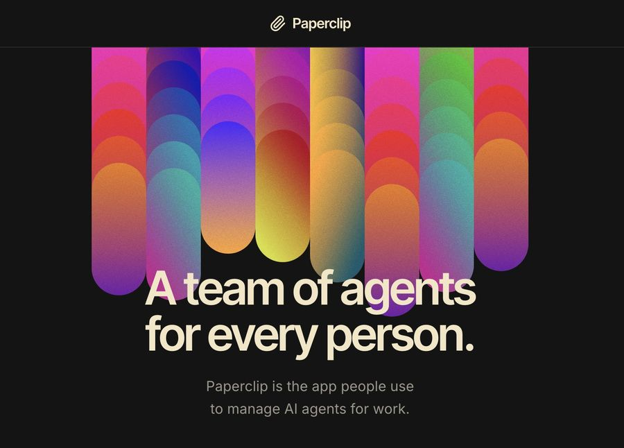

README imagepaperclipai/paperclipWatchlist
A Node.js server and React dashboard for running a team of AI agents like a small company. You bring your own agents, give them goals and roles, and track their work, approvals, and spending in one place.
★ 97.8kstars
+4,505 in last 7 days643.6/day · +18k in 30 days (GitHub star history)
No testimonials or notable Hacker News mentions found.